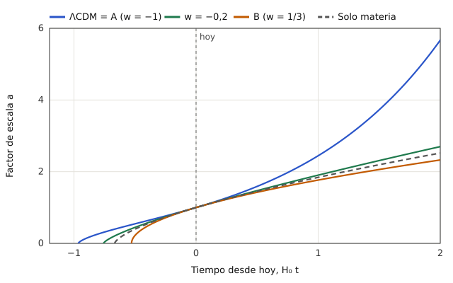
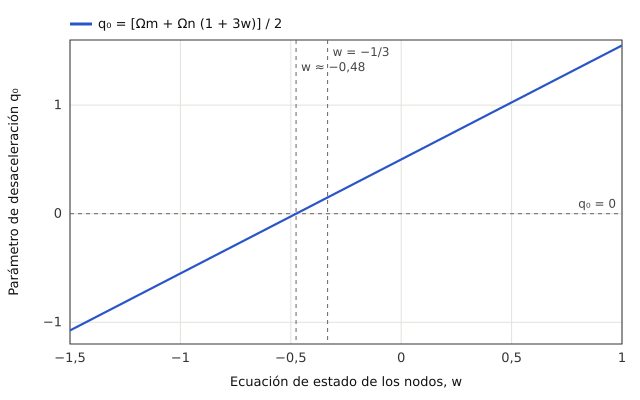
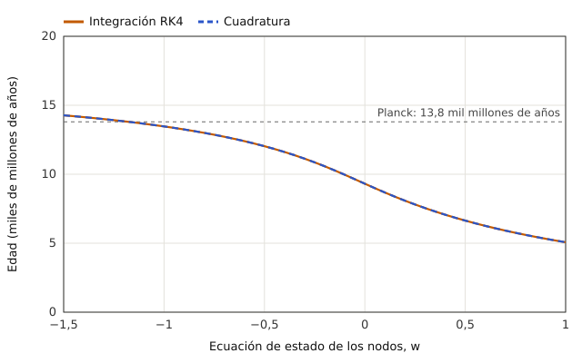
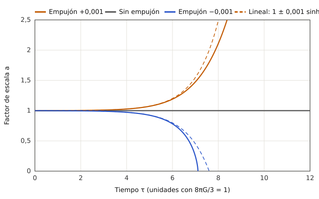
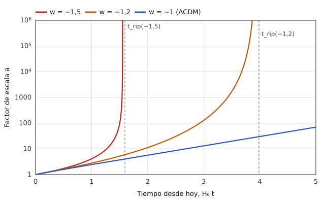

Preprint · documento de trabajo sin revisión por pares
Un universo de juguete: por qué unos nodos con presión negativa empujarían la expansión en lugar de frenarla
A toy universe: why nodes with negative pressure would push the expansion instead of slowing it down
Bruno Loiacono · Estudiante de Física, Universidad de Buenos Aires · Noviembre de 2026
Resumen
La idea que motiva este trabajo imaginaba un universo con «nodos»: zonas ultradensas con presión negativa que contrarrestarían la expansión. En relatividad general la presión también gravita, y la aceleración de la expansión depende de $\rho + 3p/c^2$: una componente con ecuación de estado $w = p/(\rho c^2) < -1/3$ no frena la expansión sino que la acelera. Con un modelo de juguete de Friedmann, integrado numéricamente y chequeado contra soluciones analíticas, se muestra que nodos con $w = -1$ son indistinguibles de una constante cosmológica: con 30 % de materia dan $q_0 = -0{,}55$ y una edad de $0{,}964/H_0$, 13,5 mil millones de años para $H_0 = 70$ km/s/Mpc. Nodos con presión positiva ($w = 1/3$) frenarían, pero el universo tendría 7,4 mil millones de años, menos que sus estrellas más viejas. Un equilibrio estático a la Einstein existe pero es inestable, con perturbaciones que crecen como $\sinh\tau$. Se discuten las propuestas de gravastars y de agujeros negros acoplados a la expansión, que son la versión seria de la idea, y qué haría falta para un equilibrio estable.
Abstract
The idea behind this paper imagined a universe with “nodes”: ultradense regions with negative pressure that would counteract cosmic expansion. In general relativity pressure also gravitates, and the acceleration of the expansion depends on $\rho + 3p/c^2$: a component with equation of state $w = p/(\rho c^2) < -1/3$ does not slow the expansion down but speeds it up. Using a toy Friedmann model, integrated numerically and checked against analytic solutions, nodes with $w = -1$ are shown to be indistinguishable from a cosmological constant: with 30% matter they give $q_0 = -0.55$ and an age of $0.964/H_0$, 13.5 billion years for $H_0 = 70$ km/s/Mpc. Nodes with positive pressure ($w = 1/3$) would decelerate, but the universe would be 7.4 billion years old, younger than its oldest stars. An Einstein-like static equilibrium exists but is unstable, with perturbations growing as $\sinh\tau$. Proposals of gravastars and of black holes coupled to the expansion, the serious version of the idea, are discussed, together with what a stable equilibrium would require.
Palabras clave: ecuaciones de Friedmann; ecuación de estado; energía oscura; universo de Einstein; acoplamiento cosmológico; gran desgarro.
Keywords: Friedmann equations; equation of state; dark energy; Einstein universe; cosmological coupling; Big Rip.
1. Introducción
La idea original imaginaba un universo con «nodos»: zonas ultradensas, con algo parecido a una curvatura invertida y presión negativa, que contrarrestarían la expansión del universo. La intuición es razonable a primera vista: una presión negativa es una tensión, como la de una banda elástica estirada, y algo que «tira hacia adentro» debería frenar la expansión.
La relatividad general dice lo contrario. En las ecuaciones de Friedmann, la fuente de la desaceleración no es solo la densidad de energía sino la combinación $\rho + 3p/c^2$. Una presión lo bastante negativa hace que esa combinación sea negativa, y entonces la gravedad se vuelve repulsiva: acelera la expansión. Es lo que hace la energía oscura. Los nodos, si tienen presión negativa, no frenarían el universo sino que lo empujarían.
La sección 2 resume la historia de la cosmología relativista que lleva a esa conclusión y las propuestas recientes que se parecen a los nodos. La sección 3 escribe el modelo con unidades explícitas y deriva sus soluciones analíticas. La sección 4 compara escenarios con nodos que empujan, nodos que frenan y el equilibrio de Einstein. La sección 5 formula las versiones posibles de la idea y qué física haría falta para cada una.
2. Antecedentes
2.1. El universo de Einstein y su inestabilidad
En 1917, dos años después de formular la relatividad general, Einstein la aplicó al universo entero. Se creía que el universo era estático, y sus ecuaciones no admitían un universo estático lleno de materia: la gravedad lo haría colapsar. Para evitarlo agregó la constante cosmológica $\Lambda$, una repulsión uniforme que, con el valor justo, equilibra la atracción de la materia en un universo cerrado y quieto. El mismo año, de Sitter (1917) encontró una solución sin materia y con $\Lambda$, que hoy describe una región llena de energía del vacío. Eddington (1930) mostró que el equilibrio de Einstein es inestable, como un lápiz parado sobre la punta: si el universo se expande un poco, la densidad de materia baja y la repulsión gana; si se contrae, gana la atracción.
2.2. Friedmann, Lemaître y la expansión
Friedman (1922) encontró las soluciones de las ecuaciones de Einstein para un universo homogéneo e isótropo sin exigir que fuera estático: universos que se expanden, se contraen u oscilan según su contenido y su curvatura. Lemaître llegó a las mismas ecuaciones de manera independiente en 1927 y las conectó con las velocidades de alejamiento de las galaxias; su artículo se tradujo al inglés en 1931 (Lemaître 1931). Hubble (1929) publicó la relación entre velocidad y distancia con sus propios datos. Penzias y Wilson (1965) detectaron el fondo cósmico de microondas, el resto térmico del universo temprano.
2.3. Por qué la presión gravita
Raychaudhuri (1955) derivó la ecuación que muestra que, si $\rho + 3p/c^2 > 0$, los haces de geodésicas se enfocan. Hawking y Ellis (1973) usaron esa condición, la condición de energía fuerte, en los teoremas de singularidad. La violan la energía del vacío y el campo que habría causado la inflación del universo temprano, propuesta por Starobinsky (1980) y Guth (1981): una etapa de expansión acelerada con $w \approx -1$. Ryden (2003) da el argumento termodinámico: cuando un volumen con presión negativa se expande, se hace trabajo sobre él y su energía aumenta, coherente con que la densidad del vacío no se diluya.
2.4. La aceleración cósmica
Riess et al. (1998) y Perlmutter et al. (1999) usaron supernovas de tipo Ia, estandarizadas con la relación entre brillo máximo y ritmo de apagado de Phillips (1993), y encontraron que las lejanas eran más débiles de lo esperado en un universo que frena: la expansión se acelera. Combinadas con la medición de la planitud del espacio en el fondo de microondas (de Bernardis et al. 2000) y con la escala de las oscilaciones acústicas de bariones en la distribución de galaxias (Eisenstein et al. 2005; Cole et al. 2005), dieron lugar al modelo $\Lambda$CDM. Los resultados de Planck (Planck Collaboration 2020) dan un universo plano con $\Omega_{\mathrm m} \approx 0{,}315$ y una edad de 13,8 mil millones de años. Las mediciones de DESI (DESI Collaboration 2025; DESI Collaboration 2025), combinadas con supernovas y el fondo de microondas, muestran una preferencia moderada por una energía oscura cuya ecuación de estado cambia con el tiempo. La constante de Hubble medida localmente, $73{,}0 \pm 1{,}0$ km/s/Mpc según Riess et al. (2022), no coincide con la que infiere Planck, $67{,}4 \pm 0{,}5$: es la tensión de Hubble.
2.5. El problema de la constante cosmológica
Zel'dovich (1968) señaló que la energía de punto cero de los campos cuánticos actúa como una constante cosmológica, con $w = -1$. El problema es su valor: una estimación ingenua da una densidad muchísimo mayor que la observada. Weinberg (1989) y Carroll (2001) revisan el problema, que motiva buscar fuentes alternativas de la energía oscura. Los modelos de quintaesencia de Ratra y Peebles (1988) y Caldwell et al. (1998) describen la energía oscura como un campo escalar con una $w$ que evoluciona.
2.6. Objetos con interior de vacío
Mazur y Mottola (2004) propusieron las gravastars: objetos que desde afuera son indistinguibles de un agujero negro, pero cuyo interior es una región de de Sitter, separada del exterior por una capa delgada de materia rígida. Son lo más parecido en la literatura a un nodo de la idea. Pero una gravastar aislada gravita desde afuera como cualquier masa; para que muchas actúen como energía oscura hace falta un mecanismo adicional.
Croker y Weiner (2019) propusieron ese mecanismo: si el interior de los agujeros negros es de vacío, su masa podría crecer con la expansión, $M \propto a^{k_{\mathrm c}}$ (ecuación \eqref{eq:acople}). Farrah et al. (2023) estudiaron el crecimiento de agujeros negros supermasivos en galaxias elípticas hasta $z \approx 2{,}5$, encontraron evidencia de un crecimiento acoplado a la expansión compatible con $k_{\mathrm c} \approx 3$ y propusieron a los agujeros negros como fuente astrofísica de la energía oscura. La propuesta fue discutida: Andrae y El-Badry (2023) mostraron que, si las masas crecieran como $(1+z)^3$, los agujeros negros de los sistemas binarios Gaia BH1 y BH2 habrían nacido con masas muy probablemente por debajo del límite de Tolman–Oppenheimer–Volkoff.
3. Modelo
3.1. Ecuaciones de Friedmann
En un universo homogéneo e isótropo, las distancias entre galaxias escalan con el factor de escala $a(t)$, adimensional y igual a 1 hoy. El ritmo de expansión es $H = \dot a/a$, en $\mathrm{s^{-1}}$. Cada componente $i$ tiene una densidad de masa $\rho_i$ (en $\mathrm{kg\,m^{-3}}$) y una presión $p_i$ (en Pa). Las ecuaciones de Friedmann son
con $k \in \{-1, 0, 1\}$ el signo de la curvatura y $R_0$ el radio de curvatura hoy, en metros. Las unidades cierran: $G\rho$ tiene unidades de $\mathrm{m^3\,kg^{-1}\,s^{-2}\cdot kg\,m^{-3}} = \mathrm{s^{-2}}$, $c^2/R_0^2$ también, y $p/c^2$ tiene unidades de $\mathrm{kg\,m^{-1}\,s^{-2}/(m^2\,s^{-2})} = \mathrm{kg\,m^{-3}}$, como $\rho$.
En la ecuación \eqref{eq:friedmann2} la presión cuenta tres veces, una por cada dirección del espacio. En la vida diaria no se nota: la presión atmosférica, $10^5$ Pa, es unas $10^{12}$ veces menor que la densidad de energía $\rho c^2$ del aire. En cosmología, con radiación o con energía del vacío, la presión es comparable a $\rho c^2$.
3.2. La ecuación de estado
La conservación de la energía en un universo que se expande da la ecuación del fluido,
con unidades de $\mathrm{kg\,m^{-3}\,s^{-1}}$ en cada término. Con una ecuación de estado $p_i = w_i \rho_i c^2$ y $w_i$ constante y adimensional, la solución es
La materia ($w = 0$) se diluye como $a^{-3}$; la radiación ($w = 1/3$), como $a^{-4}$; la constante cosmológica ($w = -1$) no se diluye; y una componente con $w < -1$, llamada fantasma, crece con la expansión. Con $p = w\rho c^2$, la combinación de la ecuación \eqref{eq:friedmann2} es $\rho(1 + 3w)$: la componente frena si $w > -1/3$ y empuja si $w < -1/3$. Ese es el resultado central del trabajo.
En un universo homogéneo, una presión negativa no empuja nada hacia ningún lado, porque está en todas partes por igual y no hay diferencias de presión. Lo único que queda es su efecto gravitatorio, que con signo negativo es repulsivo.
3.3. Forma adimensional
Se definen los parámetros de densidad $\Omega_i = \rho_{i,0}/\rho_{\mathrm c}$, con $\rho_{\mathrm c} = 3H_0^2/(8\pi G)$, el de curvatura $\Omega_K = -kc^2/(R_0^2 H_0^2)$ y el tiempo adimensional $\tau = H_0 t$. Con $' = \mathrm d/\mathrm d\tau$, las ecuaciones \eqref{eq:friedmann1} y \eqref{eq:friedmann2} quedan
con $\sum_i \Omega_i + \Omega_K = 1$ en $a = 1$. Todas las cantidades son adimensionales. El modelo integra la segunda ecuación con el método de Runge–Kutta de cuarto orden (Runge 1895), con paso adaptativo cerca de $a \to 0$, desde $a = 1$ hacia el pasado (para la edad) y hacia el futuro. Las componentes son materia, constante cosmológica y nodos con $w$ libre.
3.4. Resultados analíticos para contrastar
El parámetro de desaceleración, $q = -a\ddot a/\dot a^2$, vale hoy
Con materia y nodos en un universo plano, $q_0 = 0$ cuando
que con $\Omega_{\mathrm m} = 0{,}3$ y $\Omega_{\mathrm n} = 0{,}7$ da $w_* = -0{,}476$. Entre $w_*$ y $-1/3$ los nodos empujan, pero no alcanza para compensar a la materia.
La edad es $t_0 = \int_0^1 \mathrm{d}a/\dot a$. Para un universo plano con materia y constante cosmológica tiene forma cerrada (Ryden 2003):
y para un universo de solo materia, $H_0 t_0 = 2/3$. La aceleración empieza cuando el término de la materia en \eqref{eq:adim} iguala al de $\Lambda$ con su factor $-2$, y $\Lambda$ domina la densidad cuando las dos densidades se igualan:
3.5. El universo estático y su inestabilidad
En el caso estático no hay $H_0$; se usan unidades de tiempo en las que $8\pi G/3 = 1$, de modo que las densidades tienen unidades de tiempo$^{-2}$ y $K = kc^2/R_0^2$ también. Con materia y $\Lambda$, $a'' = -\rho_{\mathrm m}/(2a^2) + \rho_\Lambda a$, y el equilibrio en $a = 1$ exige $a'' = 0$ y $a' = 0$:
Linealizando alrededor de $a = 1$, $\delta a'' = (\rho_{\mathrm m} + \rho_\Lambda)\,\delta a = \delta a$. Una perturbación que empieza con $\delta a = 0$ y velocidad $\delta v$ crece como
la inestabilidad de Eddington con tiempo de crecimiento 1 en estas unidades.
3.6. Acoplamiento cosmológico y gran desgarro
Si una población de objetos compactos tiene masas que crecen como $M \propto a^{k_{\mathrm c}}$ y su número por volumen comóvil se conserva, su densidad va como $a^{k_{\mathrm c} - 3}$. Comparando con \eqref{eq:escala},
de modo que $k_{\mathrm c} = 3$ equivale a una constante cosmológica. Con energía fantasma ($w < -1$) el ritmo de expansión diverge en un tiempo finito. Caldwell et al. (2003) estimaron el tiempo que falta hasta ese gran desgarro como
con unidades de tiempo a través de $H_0^{-1}$.
4. Resultados
Todas las cifras salen de paper/figuras/generar.js. Las edades en años usan $H_0 = 70$ km/s/Mpc, es decir, $1/H_0 = 13{,}97$ mil millones de años. En todos los casos planos, la edad obtenida integrando con Runge–Kutta coincide con la cuadratura directa de $\int \mathrm{d}a/\dot a$ en los cuatro dígitos informados, y para $\Lambda$CDM coincide con la ecuación \eqref{eq:edad}.
4.1. Nodos que empujan y nodos que frenan
La tabla 1 resume los escenarios con $\Omega_{\mathrm m} = 0{,}3$. Con nodos de $w = -1$ (escenario A), el resultado es idéntico al de $\Lambda$CDM: $q_0 = -0{,}55$ y una edad de $0{,}964/H_0$, 13,47 mil millones de años. En un modelo homogéneo, una componente queda caracterizada por su densidad de hoy y su $w$; dos componentes con los mismos valores son indistinguibles. Si los nodos tienen $w = -1$, son una constante cosmológica.
| Escenario | $w$ de los nodos | $q_0$ | $H_0 t_0$ | Edad (miles de millones de años) |
|---|---|---|---|---|
| $\Lambda$CDM | — | $-0{,}55$ | 0,964 | 13,47 |
| A: los nodos empujan | $-1$ | $-0{,}55$ | 0,964 | 13,47 |
| Nodos débiles | $-0{,}2$ | 0,29 | 0,757 | 10,58 |
| B: los nodos frenan | $1/3$ | 0,85 | 0,528 | 7,38 |
| Solo materia ($\Omega_{\mathrm m} = 1$) | — | 0,50 | 0,667 | 9,31 |
Con nodos de presión positiva ($w = 1/3$, escenario B) la expansión frena ($q_0 = 0{,}85$) y la edad baja a 7,38 mil millones de años. Es menos que la edad de la estrella HD 140283, $14{,}46 \pm 0{,}31$ mil millones de años sin contar las incertezas de los modelos estelares (Bond et al. 2013): un universo así no podría contener sus estrellas más viejas. La figura 1 muestra el factor de escala en el tiempo para estos escenarios; las figuras 2 y 3, cómo cambian $q_0$ y la edad con $w$. El cambio de «empujan» a «frenan» ocurre en $w = -1/3$; el de expansión acelerada a frenada, en $w_* = -0{,}476$, como predice la ecuación \eqref{eq:wcero}.



4.2. Las eras de $\Lambda$CDM
Con $\Omega_{\mathrm m} = 0{,}3$ y $\Omega_\Lambda = 0{,}7$, la ecuación \eqref{eq:transiciones} da $a_{\mathrm{acel}} = 0{,}598$ ($z = 0{,}671$) y $a_{\mathrm{igual}} = 0{,}754$ ($z = 0{,}326$). Integrando, la aceleración empezó hace 6,14 mil millones de años y $\Lambda$ domina la densidad desde hace 3,66 mil millones. La aceleración empezó antes de que $\Lambda$ dominara porque su presión cuenta tres veces. Hacia el futuro, en $4/H_0$ el universo es 30,3 veces más grande que hoy. Como la edad escala con $1/H_0$, la de $\Lambda$CDM sería de 13,99 mil millones de años con $H_0 = 67{,}4$ y de 12,91 con $H_0 = 73$: la tensión de Hubble es, en parte, una tensión sobre la edad.
4.3. El universo de Einstein
Con $\rho_{\mathrm m} = 2/3$, $\rho_\Lambda = 1/3$ y $K = 1$, el universo está quieto. Con una velocidad inicial de $+0{,}001$, se queda casi quieto un buen rato y después se escapa: llega a $a = 3$ en $\tau = 8{,}76$. Con $-0{,}001$ recolapsa en $\tau = 7{,}11$. Sin perturbación se queda quieto. La linealización \eqref{eq:eddington} predice que la perturbación llega a $\delta a = 1$ en $\tau = \operatorname{arsinh}(1000) = 7{,}60$, de acuerdo con la escala de tiempo de la integración (figura 4).

4.4. El gran desgarro
Con nodos fantasma la curva del factor de escala se dispara (figura 5). Con $w = -1{,}5$, la ecuación \eqref{eq:desgarro} da $t_{\mathrm{rip}} - t_0 = 1{,}594/H_0$, unos 22,3 mil millones de años, y la integración alcanza $a = 10^6$ en $1{,}552/H_0$. Con $w = -1{,}2$, la fórmula da $3{,}984/H_0$ y la integración llega a $a = 10^6$ en $3{,}865/H_0$. La integración se detiene antes de la divergencia, por el tope numérico, así que los tiempos son una cota inferior compatible con la fórmula. Con $w = -1$, en cambio, no hay desgarro: la expansión tiende a una exponencial y el futuro es el enfriamiento lento que describen Adams y Laughlin (1997).

5. Discusión y limitaciones
5.1. Las versiones de la idea
Versión A: los nodos empujan. Los nodos son objetos compactos con interior de vacío, como gravastars o agujeros negros acoplados, cuya contribución cosmológica se comporta como $w \approx -1$. Son la causa de la aceleración. Es consistente con la relatividad general y con las observaciones, y ofrece una explicación astrofísica de la energía oscura. Su punto débil es el mecanismo de acoplamiento, que no está establecido y que las binarias de Gaia ponen en tensión (Andrae y El-Badry 2023). Tiene una consecuencia interesante: la expansión dependería de la población de agujeros negros.
Versión B: los nodos frenan. Los nodos tienen presión positiva o nula. Pero entonces pierden el ingrediente central de la idea, la presión negativa, y chocan con dos observaciones: la aceleración y la edad de las estrellas más viejas (tabla 1).
Versión C: el equilibrio. La idea sugería que los nodos mantuvieran el universo en equilibrio con retroalimentación. Eso se parece al universo de Einstein, pero el equilibrio tendría que ser estable, y la ecuación \eqref{eq:eddington} muestra que con $w$ constante no lo es. Haría falta una $w$ que reaccione al estado del universo. Un modelo de juguete posible, que este trabajo no implementa y que se plantea como hipótesis, es
con $a_*$ el tamaño de equilibrio: si el universo es más grande que $a_*$, los nodos frenan; si es más chico, empujan. Una $w$ que depende de $a$ obliga a integrar la ecuación del fluido \eqref{eq:fluido} junto con $a(\tau)$, porque la densidad deja de ser una potencia simple. Y, sobre todo, hay que explicar qué física hace que la presión de unos objetos dependa del tamaño del universo. Sin ese mecanismo, la ecuación \eqref{eq:retro} es una descripción, no una explicación. Existen universos estáticos estables en otros marcos, como el universo emergente de Ellis y Maartens (2004), pero no en relatividad general con fluidos simples.
5.2. Preguntas que una versión seria debe responder
Cualquier versión de la idea, como ciencia ficción dura o como esbozo teórico, tiene que responder: qué $w$ tienen los nodos; cómo se distribuyen, porque si son pocos y muy separados el tratamiento como fluido falla; de dónde sale su energía si no se diluye; qué gravita desde afuera, porque un nodo aislado atrae como una masa positiva; si la edad del universo resultante supera la de sus estrellas; si el equilibrio, si lo hay, es estable; y qué se observaría, por ejemplo una $w$ distinta de $-1$ o una relación entre la población de agujeros negros y la expansión.
5.3. Limitaciones del modelo
- El universo es homogéneo: los nodos se tratan como un fluido, no como objetos localizados.
- La ecuación de estado de cada componente es constante. Una $w$ variable, como sugieren los resultados de DESI, queda fuera.
- No se ajustan datos: los escenarios son ilustrativos, con parámetros redondeados.
- No hay radiación en los escenarios; la era temprana dominada por radiación cambia la edad en una fracción muy chica, pero no se calcula aquí.
- La retroalimentación de la versión C no está implementada.
6. Conclusiones y trabajo futuro
La pregunta de la idea, si unos nodos ultradensos con presión negativa frenan o empujan la expansión, tiene una respuesta clara en la relatividad general: empujan. La presión gravita, y una presión más negativa que $-1/3$ de la densidad de energía convierte la gravedad en repulsión. Nodos con $w = -1$ son una constante cosmológica; nodos que frenan dan un universo más joven que sus estrellas; y el equilibrio de Einstein existe pero es inestable. Las propuestas de gravastars y agujeros negros acoplados a la expansión son la versión seria de la idea, y su efecto, si existe, es empujar.
El trabajo futuro tiene dos partes: agregar una ecuación de estado que cambie con el tiempo, para comparar con los resultados de DESI, e implementar una retroalimentación como la de la ecuación \eqref{eq:retro} para encontrar el valor mínimo de $\beta_{\mathrm f}$ que estabiliza el universo y qué edades produce.
Declaración de uso de IA
Este trabajo se redactó con asistencia de Claude (Anthropic), un modelo de lenguaje, a partir de una guía previa del autor. El modelo propuso la estructura, la redacción, los chequeos de unidades y analíticos y el script que genera las figuras; el alcance y las decisiones son del autor, que es responsable del contenido. Las referencias se verificaron contra Crossref, Open Library y las páginas citadas con paper/verificar_bib.py, y todas las cifras de la sección 4 salen de paper/figuras/generar.js.
Referencias
- Adams, F. C. y Laughlin, G. (1997). A dying universe: The long-term fate and evolution of astrophysical objects. Reviews of Modern Physics, 69(2), 337–372. https://doi.org/10.1103/RevModPhys.69.337
- Andrae, R. y El-Badry, K. (2023). Constraints on the cosmological coupling of black holes from Gaia. Astronomy & Astrophysics, 673, L10. https://doi.org/10.1051/0004-6361/202346350
- Bond, H. E., Nelan, E. P., VandenBerg, D. A., Schaefer, G. H. y Harmer, D. (2013). HD 140283: A star in the solar neighborhood that formed shortly after the Big Bang. The Astrophysical Journal Letters, 765(1), L12. https://doi.org/10.1088/2041-8205/765/1/L12
- Caldwell, R. R., Dave, R. y Steinhardt, P. J. (1998). Cosmological imprint of an energy component with general equation of state. Physical Review Letters, 80(8), 1582–1585. https://doi.org/10.1103/PhysRevLett.80.1582
- Caldwell, R. R., Kamionkowski, M. y Weinberg, N. N. (2003). Phantom energy: Dark energy with w < −1 causes a cosmic doomsday. Physical Review Letters, 91(7), 071301. https://doi.org/10.1103/PhysRevLett.91.071301
- Carroll, S. M. (2001). The cosmological constant. Living Reviews in Relativity, 4(1), 1. https://doi.org/10.12942/lrr-2001-1
- Cole, S., Percival, W. J., Peacock, J. A., Norberg, P., Baugh, C. M., Frenk, C. S. et al. (2005). The 2dF Galaxy Redshift Survey: Power-spectrum analysis of the final data set and cosmological implications. Monthly Notices of the Royal Astronomical Society, 362(2), 505–534. https://doi.org/10.1111/j.1365-2966.2005.09318.x
- Croker, K. S. y Weiner, J. L. (2019). Implications of symmetry and pressure in Friedmann cosmology. I. Formalism. The Astrophysical Journal, 882(1), 19. https://doi.org/10.3847/1538-4357/ab32da
- de Bernardis, P., Ade, P. A. R., Bock, J. J., Bond, J. R., Borrill, J., Boscaleri, A. et al. (2000). A flat Universe from high-resolution maps of the cosmic microwave background radiation. Nature, 404(6781), 955–959. https://doi.org/10.1038/35010035
- de Sitter, W. (1917). On Einstein's theory of gravitation and its astronomical consequences. Third paper. Monthly Notices of the Royal Astronomical Society, 78(1), 3–28. https://doi.org/10.1093/mnras/78.1.3
- DESI Collaboration (2025). DESI 2024 VI: Cosmological constraints from the measurements of baryon acoustic oscillations. Journal of Cosmology and Astroparticle Physics, 2025(02), 021. https://doi.org/10.1088/1475-7516/2025/02/021
- DESI Collaboration (2025). DESI DR2 results. II. Measurements of baryon acoustic oscillations and cosmological constraints. Physical Review D, 112(8). https://doi.org/10.1103/tr6y-kpc6
- Eddington, A. S. (1930). On the instability of Einstein's spherical world. Monthly Notices of the Royal Astronomical Society, 90(7), 668–678. https://doi.org/10.1093/mnras/90.7.668
- Eisenstein, D. J., Zehavi, I., Hogg, D. W., Scoccimarro, R., Blanton, M. R., Nichol, R. C. et al. (2005). Detection of the baryon acoustic peak in the large-scale correlation function of SDSS luminous red galaxies. The Astrophysical Journal, 633(2), 560–574. https://doi.org/10.1086/466512
- Ellis, G. F. R. y Maartens, R. (2004). The emergent universe: Inflationary cosmology with no singularity. Classical and Quantum Gravity, 21(1), 223–232. https://doi.org/10.1088/0264-9381/21/1/015
- Farrah, D., Croker, K. S., Zevin, M., Tarlé, G., Faraoni, V., Petty, S. et al. (2023). Observational evidence for cosmological coupling of black holes and its implications for an astrophysical source of dark energy. The Astrophysical Journal Letters, 944(2), L31. https://doi.org/10.3847/2041-8213/acb704
- Friedman, A. (1922). Über die Krümmung des Raumes. Zeitschrift für Physik, 10(1), 377–386. https://doi.org/10.1007/BF01332580
- Guth, A. H. (1981). Inflationary universe: A possible solution to the horizon and flatness problems. Physical Review D, 23(2), 347–356. https://doi.org/10.1103/PhysRevD.23.347
- Hawking, S. W. y Ellis, G. F. R. (1973). The Large Scale Structure of Space-Time. Cambridge University Press. https://doi.org/10.1017/CBO9780511524646
- Hubble, E. (1929). A relation between distance and radial velocity among extra-galactic nebulae. Proceedings of the National Academy of Sciences, 15(3), 168–173. https://doi.org/10.1073/pnas.15.3.168
- Lemaître, G. (1931). A homogeneous universe of constant mass and increasing radius accounting for the radial velocity of extra-galactic nebulae. Monthly Notices of the Royal Astronomical Society, 91(5), 483–490. https://doi.org/10.1093/mnras/91.5.483
- Mazur, P. O. y Mottola, E. (2004). Gravitational vacuum condensate stars. Proceedings of the National Academy of Sciences, 101(26), 9545–9550. https://doi.org/10.1073/pnas.0402717101
- Penzias, A. A. y Wilson, R. W. (1965). A measurement of excess antenna temperature at 4080 Mc/s. The Astrophysical Journal, 142, 419–421. https://doi.org/10.1086/148307
- Perlmutter, S., Aldering, G., Goldhaber, G., Knop, R. A., Nugent, P., Castro, P. G. et al. (1999). Measurements of Ω and Λ from 42 high-redshift supernovae. The Astrophysical Journal, 517(2), 565–586. https://doi.org/10.1086/307221
- Phillips, M. M. (1993). The absolute magnitudes of Type IA supernovae. The Astrophysical Journal Letters, 413, L105–L108. https://doi.org/10.1086/186970
- Planck Collaboration (2020). Planck 2018 results. VI. Cosmological parameters. Astronomy & Astrophysics, 641, A6. https://doi.org/10.1051/0004-6361/201833910
- Ratra, B. y Peebles, P. J. E. (1988). Cosmological consequences of a rolling homogeneous scalar field. Physical Review D, 37(12), 3406–3427. https://doi.org/10.1103/PhysRevD.37.3406
- Raychaudhuri, A. (1955). Relativistic cosmology. I. Physical Review, 98(4), 1123–1126. https://doi.org/10.1103/PhysRev.98.1123
- Riess, A. G., Filippenko, A. V., Challis, P., Clocchiatti, A., Diercks, A., Garnavich, P. M. et al. (1998). Observational evidence from supernovae for an accelerating universe and a cosmological constant. The Astronomical Journal, 116(3), 1009–1038. https://doi.org/10.1086/300499
- Riess, A. G., Yuan, W., Macri, L. M., Scolnic, D., Brout, D., Casertano, S. et al. (2022). A comprehensive measurement of the local value of the Hubble constant with 1 km s−1 Mpc−1 uncertainty from the Hubble Space Telescope and the SH0ES team. The Astrophysical Journal Letters, 934(1), L7. https://doi.org/10.3847/2041-8213/ac5c5b
- Runge, C. (1895). Ueber die numerische Auflösung von Differentialgleichungen. Mathematische Annalen, 46(2), 167–178. https://doi.org/10.1007/BF01446807
- Ryden, B. (2003). Introduction to Cosmology. Addison-Wesley. https://openlibrary.org/works/OL8446280W
- Starobinsky, A. A. (1980). A new type of isotropic cosmological models without singularity. Physics Letters B, 91(1), 99–102. https://doi.org/10.1016/0370-2693(80)90670-X
- Weinberg, S. (1989). The cosmological constant problem. Reviews of Modern Physics, 61(1), 1–23. https://doi.org/10.1103/RevModPhys.61.1
- Zel'dovich, Y. B. (1968). The cosmological constant and the theory of elementary particles. Soviet Physics Uspekhi, 11(3), 381–393. https://doi.org/10.1070/PU1968v011n03ABEH003927